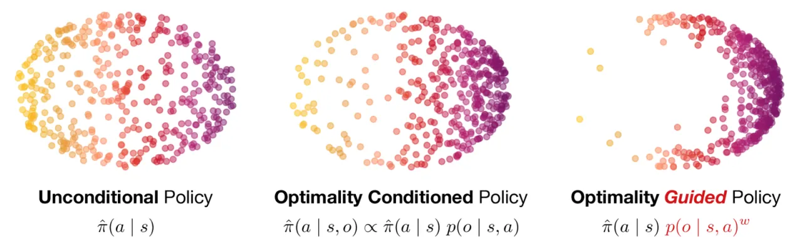
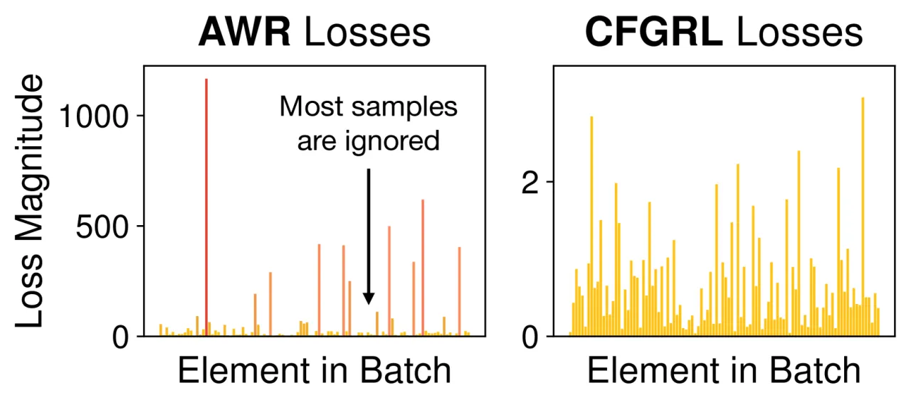
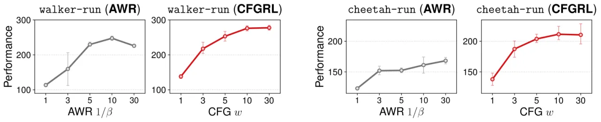
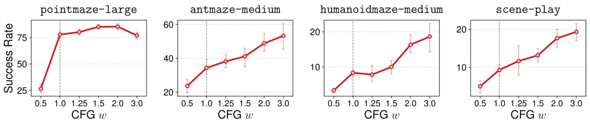
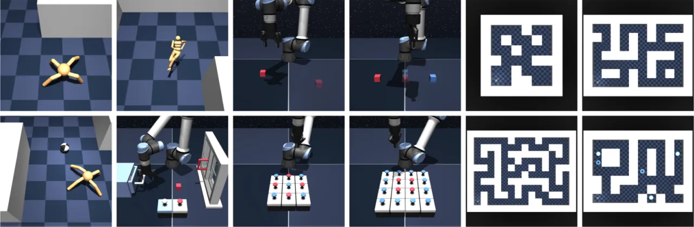

CFGRL 从理论上建立了扩散模型引导（diffusion guidance）与强化学习策略改进（policy improvement）之间的等价关系， 通过训练一个"条件 / 无条件"双分支 flow-matching 策略，在推理时调节引导权重 w 即可持续提升回报—— 无需显式学习 value function，也无需重新训练。
离线强化学习（offline RL）的核心挑战是：如何在不超出数据支撑的情况下，从固定数据集中提取比行为策略更优的策略？ 现有方法（如 Advantage-Weighted Regression / AWR）通过对数据样本赋予奖励权重来进行策略提升， 但这会造成梯度幅度在 batch 内严重不均衡——大量低优势样本几乎不贡献梯度，学习效率低下。
"We derive a direct relation between policy improvement and guidance of diffusion models, and show that CFGRL is trained with the simplicity of supervised learning, yet can further improve on the policies in the data."
本文的洞察：扩散模型中的 classifier-free guidance（CFG）天然对应着策略改进算子。 条件分支学习"最优行为"，无条件分支学习"参考行为"，两者的分数函数之差正是优势函数（advantage） 对策略的梯度方向。推理时放大引导权重 w，等价于对最优性进行更强的"衰减（attenuation）"， 从而单调地提升期望回报。

CFGRL 将策略建模为参考策略与最优性函数的乘积，训练一个 flow-matching 双条件策略， 并在推理时通过调节引导权重 w 控制"遵从参考行为"与"追求最优性"之间的权衡。
核心框架将目标策略分解为：
π(a|s) ∝ π̂(a|s) · f(A(s,a))
其中 π̂ 是参考策略（reference policy），f(A) 是关于优势函数的单调递增非负函数。
Remark 1 证明：只要 f 关于优势单调递增，乘积策略在期望回报上严格优于参考策略。
Remark 2（Attenuation）：对 f 施加更大的指数幂（w₁ < w₂）可进一步单调提升期望回报。
在 KL 正则化 RL 目标下，最优策略恰为：
π(a|s) ∝ π̂(a|s) · exp(A(s,a))^(1/β)
CFG 在扩散/flow 模型中的采样速度场为：
v = (1−w)·vθ(a,t,s,∅) + w·vθ(a,t,s,o=1)
利用 Bayes 规则可将最优性预测器 p(o|s,a) 转化为两个策略分支的差值：
∇ₐ log π(a|s) = ∇ₐ log π̂(a|s) + (∇ₐ log π̂(a|s,o) − ∇ₐ log π̂(a|s))
无需单独训练分类器——差值天然对应策略改进方向。w 越大，朝最优性方向的"推力"越强。
训练目标（flow-matching loss）：
ℒ(θ) = 𝔼_{s,a∼D}[‖vθ(aₜ,t,s,o) − (a−a₀)‖²]
其中 aₜ = (1−t)a₀ + ta（线性插值），o ∈ {0,1} 为最优性标签（离线 RL 中按
A(s,a)≥0 二值化；goal-conditioned 场景中用目标到达概率 pγ(g|s,a)）。
所有样本权重相等，消除了 AWR 的梯度不均衡问题。

在目标条件行为克隆（goal-conditioned BC）中，利用：
π(a|s,g) ∝ π̂(a|s) · pγ(g|s,a)
将目标到达概率 pγ(g|s,a) 作为最优性信号，直接通过 CFG 的两个分支（有目标 vs 无目标）
之差来估计，完全不需要显式训练 value function。
三大评测设置：(1) ExORL 离线 RL benchmark（9 个任务，4 seeds）； (2) OGBench（9 个任务，4 seeds）； (3) Goal-Conditioned BC（17 个状态任务 × 8 seeds，7 个视觉任务 × 4 seeds）。 主要基线：AWR（离线 RL）、GCBC（目标条件）。
| 任务 | AWR | CFGRL |
|---|---|---|
| walker-stand | 603±8 | 782±8 |
| walker-walk | 444±4 | 608±32 |
| cheetah-run | 168±7 | 216±15 |
| jaco-reach-top-right | 33±2 | 72±6 |
| 任务 | AWR | CFGRL |
|---|---|---|
| pointmaze-large-navigate | 70±25 | 100±0 |
| pointmaze-teleport-navigate | 3±7 | 57±7 |
| antmaze-teleport-navigate | 22±19 | 30±22 |
| 任务 | GCBC | CFGRL |
|---|---|---|
| pointmaze-giant | 2±2 | 30±10 |
| antmaze-medium | 25±8 | 53±12 |
| visual-cube-single | 1±1 | 37±9 |



引导权重敏感性实验表明：增大 w 在几乎所有评测任务上均单调提升性能， 与理论推导（Remark 2：单调衰减保证期望回报不降）相吻合。 无条件分支的加入相比纯监督 GCBC 带来了显著改善，验证了 CFG 双分支设计的必要性。
作者明确指出："Our method does not claim to replace full RL procedures — we assume a given value function and do not make any prescriptions about how to train it." CFGRL 是策略改进的附加工具，而非端到端 RL 算法，其性能上界仍受数据质量和 value function 精度约束。
"By itself, CFGRL does not represent a state-of-the-art RL algorithm, but rather an additional tool in the algorithm designer's toolbox." 更强的外推（超越数据分布）需要结合更高级的在线 RL 技术。作者提到： "More advanced policy extraction methods and online RL techniques … could provide for stronger extrapolation."
离线 RL 场景中，CFGRL 需要预先估计优势函数 A(s,a) 以生成二值最优性标签 o。
优势估计的质量直接影响训练标签的准确性。Goal-conditioned 场景虽可绕开显式 value function，
但仍依赖目标到达概率 pγ(g|s,a) 的合理建模。